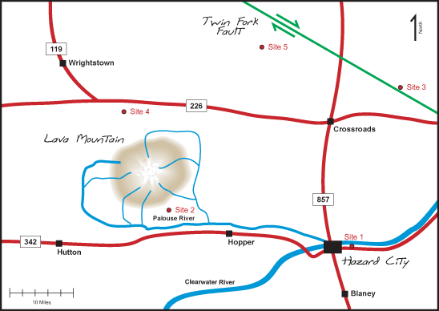

Hazard City has a problem. Their municipal waste landfill is nearing capacity and there are no nearby landfills with uncommitted capacity. A new landfill must be constructed soon. This landfill must have adequate capacity to serve approximately 15,000 residents of Hazard City and the surrounding county. Five sites have been proposed for development, as shown on the map below:

(Please click on the various areas on the map to learn more.)
Each of these sites has a group of people pushing for development and another group
of people who is strongly opposed to a landfill at that site. You are a
geologist working for the state agency that evaluates proposed landfill
sites. In that capacity, you must not take sides in these disputes. Instead,
you must objectively examine each site and determine if it meets the General
Geology and Soils Requirements specified in Rule §330.3 of the State
Administrative Code. Although a lot of money and emotions are linked to
your decisions, your only job is to compare the characteristics of the site
with criteria presented in the state’s regulations. Perhaps one or
more of the sites will be suitable for development. It is also possible
that none of the sites will meet the regulations.
You can use the navigation bar at bottom of this page to review the format
of your report, consult the state administrative code, and to access the
geographic archive. These contain all of the information that you will need
to do your work.